Summarizing Bering Sea Daily Sea Ice Concentration Data
D. Rizzolo
2026-04-17
Last updated: 2026-04-17
Checks: 7 0
Knit directory: sea_ice_bs_core/
This reproducible R Markdown analysis was created with workflowr (version 1.7.2). The Checks tab describes the reproducibility checks that were applied when the results were created. The Past versions tab lists the development history.
Great! Since the R Markdown file has been committed to the Git repository, you know the exact version of the code that produced these results.
Great job! The global environment was empty. Objects defined in the global environment can affect the analysis in your R Markdown file in unknown ways. For reproduciblity it’s best to always run the code in an empty environment.
The command set.seed(20250904) was run prior to running
the code in the R Markdown file. Setting a seed ensures that any results
that rely on randomness, e.g. subsampling or permutations, are
reproducible.
Great job! Recording the operating system, R version, and package versions is critical for reproducibility.
Nice! There were no cached chunks for this analysis, so you can be confident that you successfully produced the results during this run.
Great job! Using relative paths to the files within your workflowr project makes it easier to run your code on other machines.
Great! You are using Git for version control. Tracking code development and connecting the code version to the results is critical for reproducibility.
The results in this page were generated with repository version a79c96d. See the Past versions tab to see a history of the changes made to the R Markdown and HTML files.
Note that you need to be careful to ensure that all relevant files for
the analysis have been committed to Git prior to generating the results
(you can use wflow_publish or
wflow_git_commit). workflowr only checks the R Markdown
file, but you know if there are other scripts or data files that it
depends on. Below is the status of the Git repository when the results
were generated:
Ignored files:
Ignored: .Rhistory
Ignored: .Rproj.user/
Ignored: code/.Rhistory
Ignored: code/archive/
Ignored: code/sic_nsidc_download_summarize/archive/
Ignored: data/sourced_data/bremen_daily_sic/
Ignored: data/sourced_data/nsidc_sic_v3/
Ignored: data/sourced_data/nsidc_sic_v4/sic_geotif/
Ignored: data/sourced_data/nsidc_sic_v4/sic_geotif_temp/
Ignored: data/sourced_data/nsidc_sic_v4/sic_raw_netcdf/sic_netcdf_19921130_20241231/
Ignored: data/sourced_data/nsidc_sic_v4/sic_raw_netcdf/sic_netcdf_19921130_20241231_temp/
Ignored: data/sourced_data/nsidc_sic_v4/sic_raw_netcdf/sic_netcdf_20241101_20250430/
Ignored: library/
Ignored: output/archive/
Ignored: temp/
Untracked files:
Untracked: analysis/README_updated_sea_ice_nsidc_download_20260407.txt
Untracked: code/sic_nsidc_download_summarize/README_updated_sea_ice_nsidc_download_20260407.txt
Untracked: code/sic_nsidc_download_summarize/rbind_sic_bootstrapv4_16pixles_timeSeries_recentYear.R
Untracked: metadata.json
Untracked: output/figs/just_core.jpg
Untracked: output/figs/plot_count_days_ge95pct_sic_1992-2024.png
Untracked: output/sic_beringSea_16pixels/nsidc_sic_summary_v4/sic_bootstrapv4_16pixels_01Nov-30Apr_1992-2025.csv
Untracked: output/sic_beringSea_16pixels/nsidc_sic_summary_v4/sic_bootstrapv4_16pixels_01Nov-30Apr_2024-2025.csv
Untracked: output/sic_beringSea_4pixels/compare_christie_to_v4_daily_4pixel_min_sic_1992-2024.csv
Untracked: output/sic_beringSea_4pixels/daily_4pixel_min_sic_1992-2024.csv
Untracked: output/sic_beringSea_4pixels/sea_ice_vars_1995_2025.csv
Unstaged changes:
Modified: code/create_workflowr_prj.R
Modified: code/sic_nsidc_download_summarize/00_download_seaice_data_from_nsidc_20250903.R
Modified: code/sic_nsidc_download_summarize/01_convert_daily_netcdf_bootstrap_to_geotif_20250902.R
Modified: code/sic_nsidc_download_summarize/02_extract_specEider_winterIce_bootstrap_sic_geotif_20250902.R
Modified: code/sic_nsidc_download_summarize/04_summarize_daily_min4_bs3_append_to_allYears_20250902.R
Modified: data/data_christie_et_al_2018/spei_winter_ice.xlsx
Note that any generated files, e.g. HTML, png, CSS, etc., are not included in this status report because it is ok for generated content to have uncommitted changes.
These are the previous versions of the repository in which changes were
made to the R Markdown
(analysis/04_summarize_daily_min_bs3_sic.Rmd) and HTML
(docs/04_summarize_daily_min_bs3_sic.html) files. If you’ve
configured a remote Git repository (see ?wflow_git_remote),
click on the hyperlinks in the table below to view the files as they
were in that past version.
| File | Version | Author | Date | Message |
|---|---|---|---|---|
| Rmd | a79c96d | DJRIZZ | 2026-04-17 | Updated with sea ice data from Jan-Apr 2026 |
Sourced Satellite data
Variation in spectacled eider apparent survival (Flint et al. 2016, Christie et al. 2018, Dunham et al. 2021), breeding area abundance (Petersen and Douglas 2004) and nest survival (Friendly et al. 2025) has been associated with winter sea ice in the Bering Sea. Sea ice data have been sourced from the National Snow and Ice Data Center’s (NSIDC) remotely sensed data on sea ice concentration (sic). The NSIDC data are derived using measurements from the Scanning Multichannel Microwave Radiometer (SMMR) on the Nimbus-7 satellite and from the Special Sensor Microwave/Imager (SSM/I) sensors on the Defense Meteorological Satellite Program’s (DMSP) -F8, -F11, and -F13 satellites.
These data are processed with NSIDC’s Advanced Microwave Scanning Radiometer - Earth Observing System (AMSR-E) Bootstrap Algorithm with daily varying tie-points, which is currently version 4.0 (released May 2024). Data and data documentation are available at: https://nsidc.org/data/nsidc-0079/versions/4.
Spectacled eider “core” wintering area
This code summarizes sea ice concentration data following previously established and repeatedly applied methods (Petersen and Douglas 2005, Flint et al. 2016, Christie et a. 2018, Dunham et al. 2021, Friendly et al. 2025). The location of interest is delineated by four 25 x 25 km pixels that overlap the area of use (higher than average density of satellite transmitter locations from 13 individuals, both sexes, between 21 Nov to 31 Jan 1993-1997) designated the “core area” (Petersen and Douglas 2004). This area is in the northern Bering Sea, approximately 100 km west-southwest of St. Lawrence Island.
Subsequent satellite transmitter deployments on spectacled eiders (Sexson et al. 2014, USFWS 2021) indicate that winter space use, including the core area, varies annually, but is consistently south of St. Lawrence Island. Despite this spatial variation, the core area from 1990s is used to index sea ice conditions across the broader area used by wintering spectacled eiders. Patterns in sea ice extent and sea ice area among years are reflected in sea ice cover in the core area delineated by Petersen and Douglas (see references in Friendly et al. 2025). Accordingly, the “core” area is more appropriately called the “ice” area.
map_core <- load.image("output/figs/just_core.jpg")
plot(map_core, main = "Area Used to Quantify Sea Ice for Spectacled Eiders", axes = FALSE)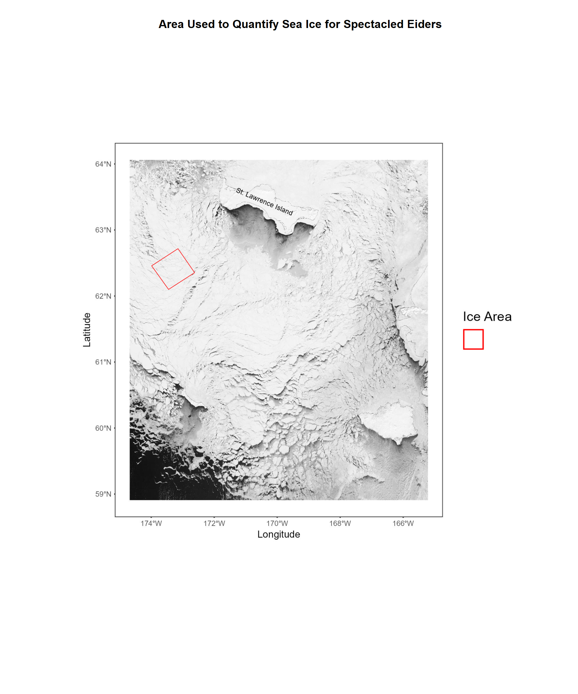
Data access and processing
The raw data summarized here were downloaded with script 00_download_seaice_data_from_nsidc.R, converted from the native netCDF format to geotifs with script 01_convert_daily_netcdf_bootstrap_to_geotif.R, and extracted from the pixels of interest using script 02_extract_specEider_winterIce_bootstrap_sic_geotif.R. The “02_” script outputs the data set used as the input in this script, sic_bootstrapv4_16pixels_01Nov-30Apr_1992-2025.csv.
That data set, loaded as object all.ice, includes the pixel number (pixel, 1 through 16, with 1 through 4 being the ice area), sea ice concentration as a proportion (bs_sic_prop), the date of the sic measurement(sicDate), x and y coordinates of the cell mid-point, also in lat/lon in polar stereographic grid (EPSG:3411).
all.ice <- read.csv("output/sic_beringSea_16pixels/nsidc_sic_summary_v4/sic_bootstrapv4_16pixels_01Nov-30Apr_1992-2024.csv", header=T)
str(all.ice)'data.frame': 92784 obs. of 7 variables:
$ pixel : int 1 2 3 4 5 6 7 8 9 10 ...
$ bs_sic_prop: num 0 0 0 0 0 0 0 0 0 0 ...
$ sicDate : int 19921101 19921101 19921101 19921101 19921101 19921101 19921101 19921101 19921101 19921101 ...
$ x : num -2411473 -2387277 -2411473 -2387277 -2410667 ...
$ y : num 1887832 1887832 1862022 1860409 1837019 ...
$ lon : num -173 -173 -173 -173 -172 ...
$ lat : num 62.3 62.4 62.4 62.6 62.5 ...In version 3 of the sic data, data were in permil that I converted to percent. Version 4 data are proportions that I change to percentages. The code then subsets the data from 16 pixels to the 4 pixels of the core area to use for sic data summaries.
# 1. Change sic from proportion to percent ####
all.ice$bs_sic <- all.ice$bs_sic_prop*100 # version 4 sic are proportions, previous versions sic was permil
str(all.ice)'data.frame': 92784 obs. of 8 variables:
$ pixel : int 1 2 3 4 5 6 7 8 9 10 ...
$ bs_sic_prop: num 0 0 0 0 0 0 0 0 0 0 ...
$ sicDate : int 19921101 19921101 19921101 19921101 19921101 19921101 19921101 19921101 19921101 19921101 ...
$ x : num -2411473 -2387277 -2411473 -2387277 -2410667 ...
$ y : num 1887832 1887832 1862022 1860409 1837019 ...
$ lon : num -173 -173 -173 -173 -172 ...
$ lat : num 62.3 62.4 62.4 62.6 62.5 ...
$ bs_sic : num 0 0 0 0 0 0 0 0 0 0 ...all.ice$sicDate <- as.Date(as.character(all.ice$sicDate), format = "%Y%m%d") # format as date
hist(all.ice$bs_sic)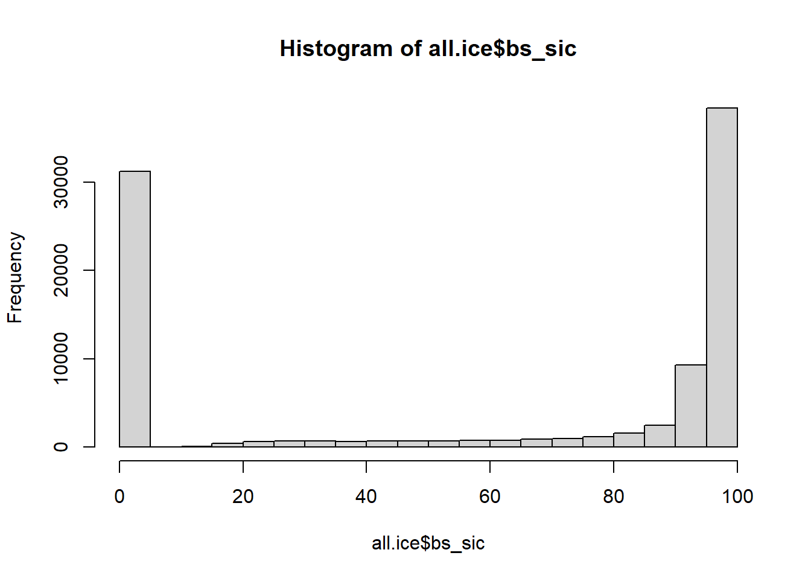
# 2. Select 4 core pixels ####
# subset to the pixels in the core area (pixels 1 to 4, as per "specEider_winter_pixel_sample_map.png", see supplementary data from Christie et al. (2018)
core_data <- subset(all.ice, pixel < 5)
table(core_data$pixel)
1 2 3 4
5799 5799 5799 5799 hist(core_data$bs_sic)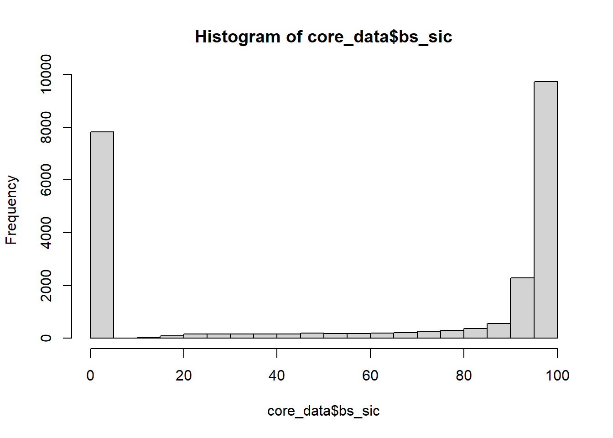
The value used to summarize sic is the count of days when the minimum sic value among the 4 cells was >= 95% during the winter (01 Nov to 30 April, inclusive). The idea underlying this approach is that this count is more relevant to a spectacled eider wintering in the Bering Sea than mean sic during a given winter, as means are mathematical creations, not reality. Daily values and timing of those values can be very different and still have the same mean.
# 3. Aggregate the minimum pixel sic value across the 4 core pixels for each day #####
daily_min_sic_core <- aggregate(core_data$bs_sic ~ core_data$sicDate, FUN = min) # find the min sic value of the 4 pixel values for each day
colnames(daily_min_sic_core) <- c("date", "sic_min4")
head(daily_min_sic_core) date sic_min4
1 1992-11-01 0
2 1992-11-02 0
3 1992-11-03 0
4 1992-11-04 0
5 1992-11-05 0
6 1992-11-06 0hist(daily_min_sic_core$sic_min4)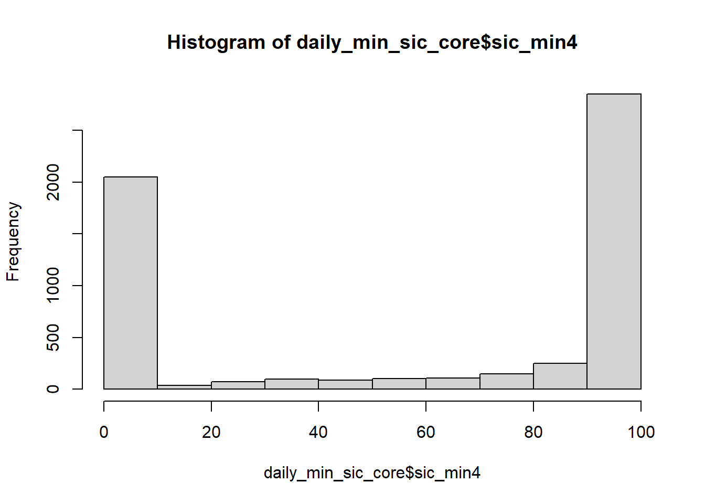
Mark-resight occasions correspond to the breeding season, May-June, and data run from the summer of 1992 through the summer of 2025. SIC data for a given calendar year are typically processed and released early in the following year. Data summarized here as of April 2026 include 1992-2026.
Survival over a given year, June year t to June year t + 1, would be potentially influenced by sea ice during the winter that began the preceding calender year. Here, that preceding winter (Nov year t through April year t+1) is created as year_winter.
# 4. Data wrangling steps ####
daily_min_sic_core$month <- as.numeric(format(daily_min_sic_core$date, "%m")) # assign column for month of year as numeric
table(daily_min_sic_core$month)
1 2 3 4 11 12
992 904 991 960 960 992 daily_min_sic_core$year_cal <- as.numeric(format(daily_min_sic_core$date, "%Y")) # assign calendar year
daily_min_sic_core$year_winter <- ifelse(daily_min_sic_core$month > 10,daily_min_sic_core$year,daily_min_sic_core$year-1) # assign winter year as the year at the start of the winter
table (daily_min_sic_core$year_winter)
1992 1993 1994 1995 1996 1997 1998 1999 2000 2001 2002 2003 2004 2005 2006 2007
181 181 181 182 181 181 181 182 181 181 181 182 181 181 181 182
2008 2009 2010 2011 2012 2013 2014 2015 2016 2017 2018 2019 2020 2021 2022 2023
181 181 181 182 181 181 181 182 181 181 181 182 181 181 181 181 # remove years with incomplete winter data: 1978 (start year, incomplete; data were every-other-day 1978-part way through 1987, and likely most recent year)
daily_min_sic_core <- subset(daily_min_sic_core, year_winter != 1978 & year_winter != 2024) # complete 2024 data not currently available, on data through 31 Dec 2024
table (daily_min_sic_core$year_winter)
1992 1993 1994 1995 1996 1997 1998 1999 2000 2001 2002 2003 2004 2005 2006 2007
181 181 181 182 181 181 181 182 181 181 181 182 181 181 181 182
2008 2009 2010 2011 2012 2013 2014 2015 2016 2017 2018 2019 2020 2021 2022 2023
181 181 181 182 181 181 181 182 181 181 181 182 181 181 181 181 Designating seasons
Seasons were defined in different ways in previous studies: -Winter
in Petersen & Douglas (2005): 01 Dec-30 Mar,
-Winter in Flint et al. (2016) and Christie et al. (2018): 01 Nov-30 Apr
-Spring in Petersen & Douglas (2005): 01-30 April
Here, I use these time frames of interest: -Winter-Spring: 01 Nov - 30 Apr (although typically no ice in Nov, except 1983, 1987, 1999) -Winter: 01 Nov-30 Mar -Spring: 01-30 April
Counts of ice days in the core area
Prior to Christie et al. (2018), the effect of sea ice on spectacled eiders was related to the number of days of high ice cover (Petersen and Douglas 2004, Flint et al. 2016). Both of those studies used a count of days wtih a minimum of >=95% among the 4 pixels overlapping the core area. Christie et al. (2018) used a count of days with a minimum of > 95% sea ice cover.
Here, I use > = 95% cover during winter-spring (ws: 01 Nov-30 Apr), winter (01 Nov-31 March), and spring (sp: 01-30 Apr).
# 5. Count high (>= 95%) sic days for WINTER+SPRING (01 Nov - 30 Apr): ws_hi ####
daily_min_sic_core$hi_ice <- ifelse(daily_min_sic_core$sic_min4 >= 95,1,0)
hist(daily_min_sic_core$hi_ice)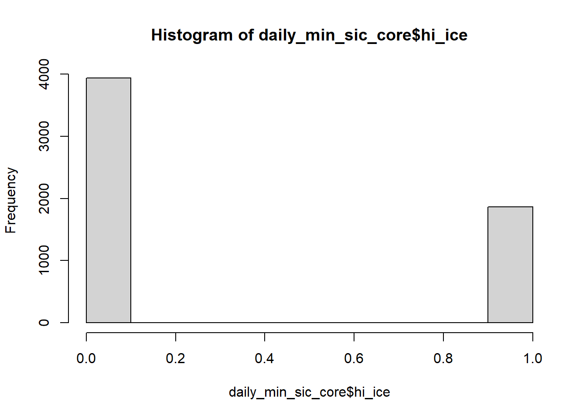
# AND create indicator variable (lo_ice) for days with min sic < 15% (Christie et al. 2018; Fig. 4)
daily_min_sic_core$lo_ice <- ifelse(daily_min_sic_core$sic_min4 < 15, 1, 0)
hist(daily_min_sic_core$lo_ice)
table(daily_min_sic_core$lo_ice)
0 1
3746 2053 # Seasons as defined previously: Petersen & Douglas winter=Dec-Mar, spring=April; Flint et al. 2016 & Christie et al. 2018: winter = 01 Nov-30 Apr
# Here, I use these time frames of interest:
# Winter-Spring: 01 Nov - 30 Apr (although typically no ice in Nov, except 1983, 1987, 1999)
# Winter: 01 Nov-30 Mar
# Spring: 01-30 April
# count total days with >= 95% ice cover for each year_winter
ws_hi <- aggregate(daily_min_sic_core$hi_ice ~ daily_min_sic_core$year_winter, FUN = sum)
colnames(ws_hi) <- c("year_winter", "ws_count_sic_ge95")
hist(ws_hi$ws_count_sic_ge95)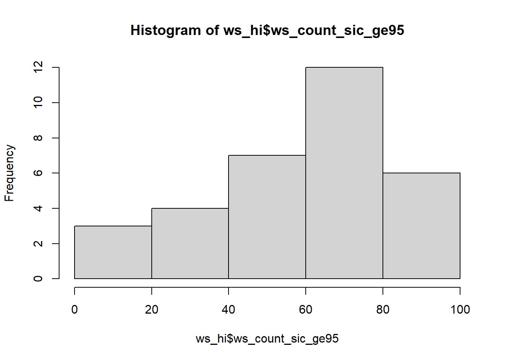
# plot ws_count_sic_ge95
p.ws_hi <- ggplot(ws_hi, aes(x=year_winter, y=ws_count_sic_ge95))+
geom_line() +
labs(y = "Days of High (>=95%) Sea Ice Cover", x = "Year") +
theme_bw()
p.ws_hi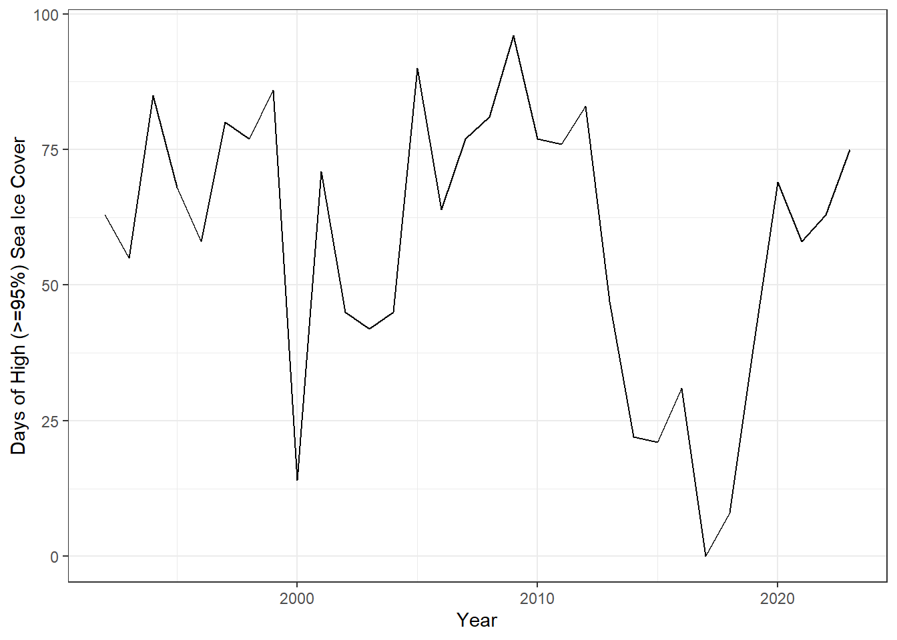
ggsave("output/figs/plot_count_days_ge95pct_sic_1992-2023.png", width = 6, height = 3, units = "in")
# 6. Count high sic days for WINTER (01 Nov - 31 March): winter_hi ####
summary(daily_min_sic_core) date sic_min4 month year_cal
Min. :1992-11-01 Min. : 0.00 Min. : 1.000 Min. :1992
1st Qu.:2000-07-31 1st Qu.: 0.00 1st Qu.: 2.000 1st Qu.:2000
Median :2008-04-30 Median : 88.60 Median : 4.000 Median :2008
Mean :2008-07-30 Mean : 56.99 Mean : 5.531 Mean :2008
3rd Qu.:2016-04-29 3rd Qu.: 96.90 3rd Qu.:11.000 3rd Qu.:2016
Max. :2024-04-30 Max. :100.00 Max. :12.000 Max. :2024
year_winter hi_ice lo_ice
Min. :1992 Min. :0.0000 Min. :0.000
1st Qu.:2000 1st Qu.:0.0000 1st Qu.:0.000
Median :2007 Median :0.0000 Median :0.000
Mean :2007 Mean :0.3218 Mean :0.354
3rd Qu.:2015 3rd Qu.:1.0000 3rd Qu.:1.000
Max. :2023 Max. :1.0000 Max. :1.000 winter_sic_core <- subset(daily_min_sic_core, month != 4 & month != 5 ) # subset data winter (winter: 01 Nov-31 March)
table(winter_sic_core$month) # winter_sic_core should only include these 5 months: Nov, Dec, Jan, Feb, March
1 2 3 11 12
992 904 991 960 992 # count total days with >= 95% ice cover for each year_winter
winter_hi <- aggregate(winter_sic_core$hi_ice ~ winter_sic_core$year_winter, FUN = sum)
colnames(winter_hi) <- c("year_winter", "winter_count_sic_ge95")
hist(winter_hi$winter_count_sic_ge95)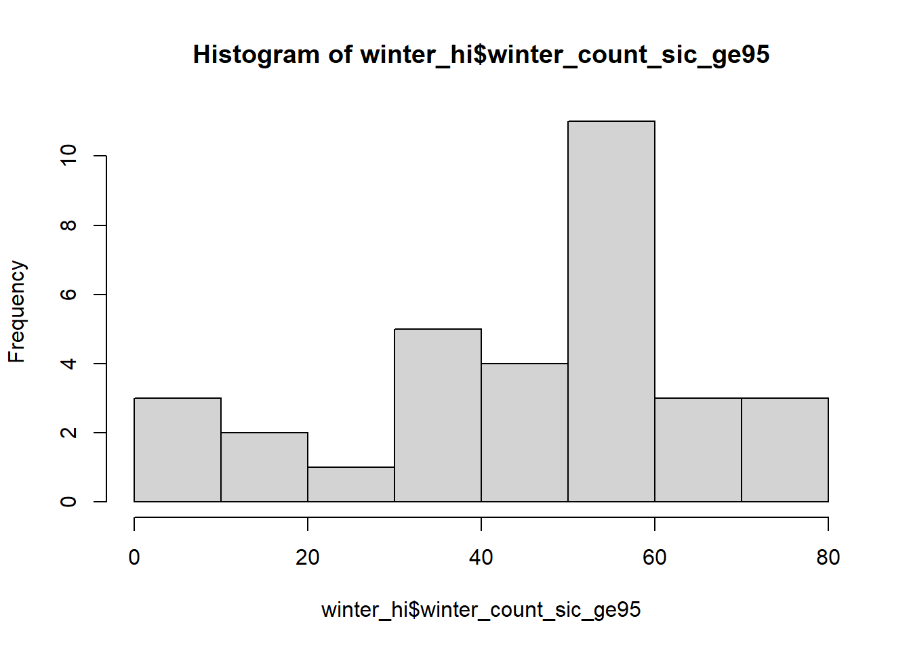
# plot winter_count_sic_ge95
p.winter_hi <- ggplot(winter_hi, aes(x=year_winter, y=winter_count_sic_ge95))+
geom_line()
p.winter_hi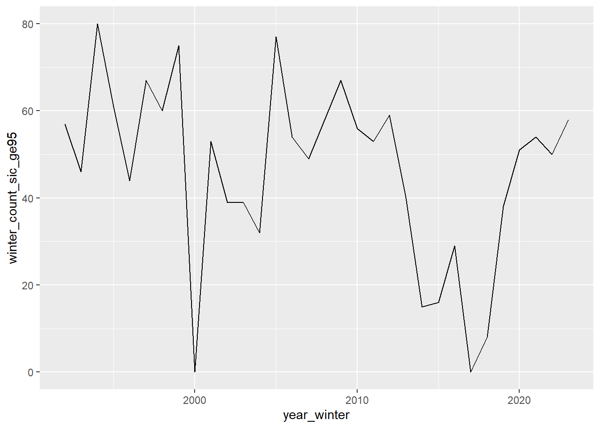
# 7. Count high sic days for SPRING (01-30 Apr): spring_hi ####
# subset data spring
summary(daily_min_sic_core) date sic_min4 month year_cal
Min. :1992-11-01 Min. : 0.00 Min. : 1.000 Min. :1992
1st Qu.:2000-07-31 1st Qu.: 0.00 1st Qu.: 2.000 1st Qu.:2000
Median :2008-04-30 Median : 88.60 Median : 4.000 Median :2008
Mean :2008-07-30 Mean : 56.99 Mean : 5.531 Mean :2008
3rd Qu.:2016-04-29 3rd Qu.: 96.90 3rd Qu.:11.000 3rd Qu.:2016
Max. :2024-04-30 Max. :100.00 Max. :12.000 Max. :2024
year_winter hi_ice lo_ice
Min. :1992 Min. :0.0000 Min. :0.000
1st Qu.:2000 1st Qu.:0.0000 1st Qu.:0.000
Median :2007 Median :0.0000 Median :0.000
Mean :2007 Mean :0.3218 Mean :0.354
3rd Qu.:2015 3rd Qu.:1.0000 3rd Qu.:1.000
Max. :2023 Max. :1.0000 Max. :1.000 spring_sic_core <- subset(daily_min_sic_core, month == 4 ) # remove data other than Apr
table(spring_sic_core$month) # spring_sic should only include April
4
960 # count total days with >= 95% ice cover for each year_winter
spring_hi <- aggregate(spring_sic_core$hi_ice ~ spring_sic_core$year_winter, FUN = sum)
colnames(spring_hi) <- c("year_winter", "spring_count_sic_ge95")
hist(spring_hi$spring_count_sic_ge95)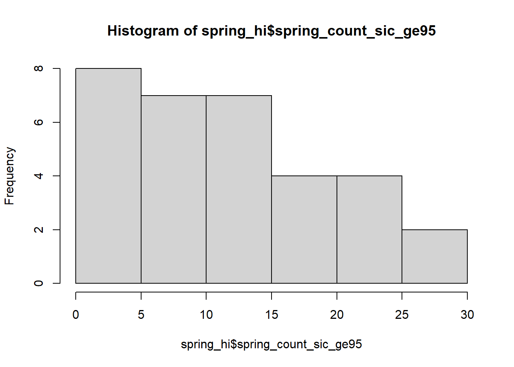
summary(spring_hi) year_winter spring_count_sic_ge95
Min. :1992 Min. : 0.00
1st Qu.:2000 1st Qu.: 5.75
Median :2008 Median :12.00
Mean :2008 Mean :11.91
3rd Qu.:2015 3rd Qu.:17.25
Max. :2023 Max. :29.00 # plot spring_count_sic_ge95
p.spring_hi <- ggplot(spring_hi, aes(x=year_winter, y=spring_count_sic_ge95))+
geom_line()
p.spring_hi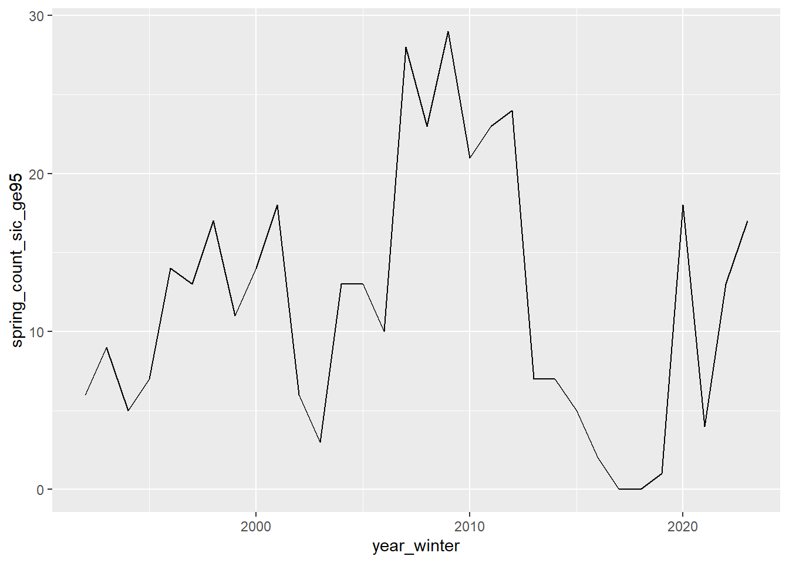
In Christie et al. (2018), after showing that apparent survival 1992-2015 was associated with days of high ice cover during winter in a quadratic association, the authors conducted a post-hoc analysis with sea ice concentration summarized as a count of days with ice cover < 15% and called it minimal ice days. This analysis showed that apparent survival declined when there were between 80 and 120 days with < 15% ice, although the pattern was driven by just 2 years that had both low survival (< 0.80) and minimal ice days (> 90 days).
This code also summarized minimal ice days as *[season]_lo*.
# 8. Count low ( < 15%) sic days for WINTER+SPRING: ws_lo ####
# create indicator variable (lo_ice) for days with min sic < 15% (Christie et al. 2018; Fig. 4)
daily_min_sic_core$lo_ice <- ifelse(daily_min_sic_core$sic_min4 < 15, 1, 0)
hist(daily_min_sic_core$lo_ice)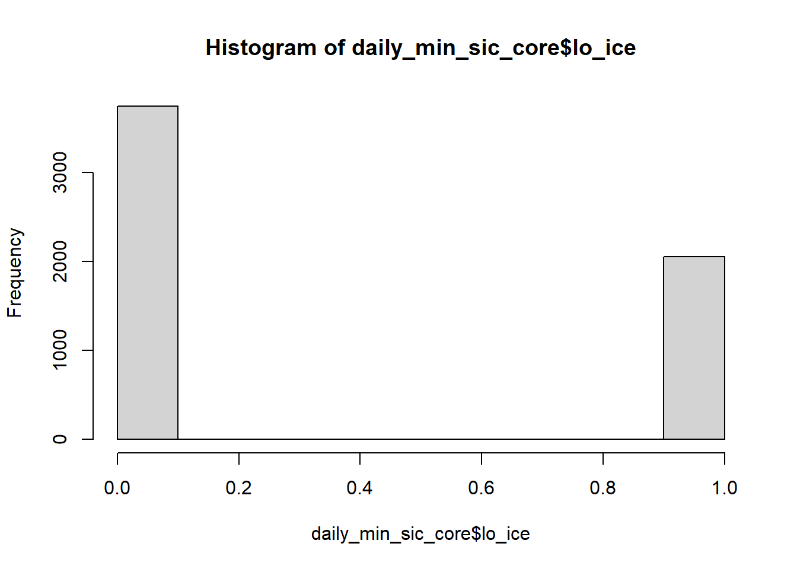
table(daily_min_sic_core$lo_ice)
0 1
3746 2053 # count total WINTER-SPRING days with < 15% ice cover for each year_winter
ws_lo <- aggregate(daily_min_sic_core$lo_ice ~ daily_min_sic_core$year_winter, FUN = sum)
colnames(ws_lo) <- c("year_winter", "ws_count_sic_le15")
hist(ws_lo$ws_count_sic_le15)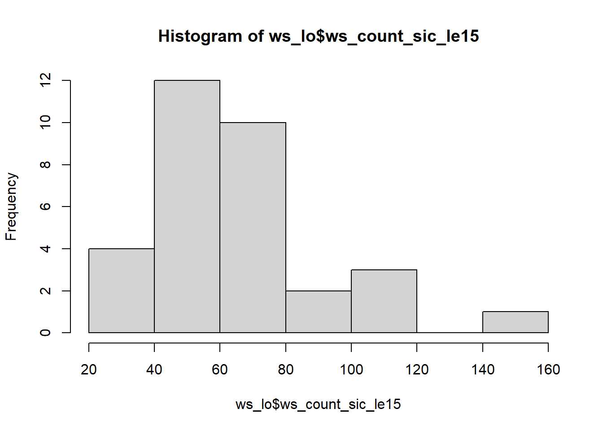
# plot ws_count_sic_le15
p.ws_lo <- ggplot(ws_lo, aes(x=year_winter, y=ws_count_sic_le15))+
geom_line()
p.ws_lo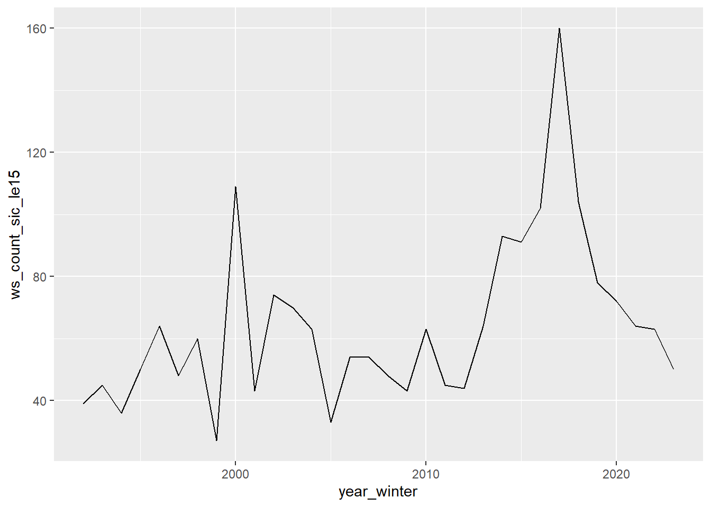
# 9. Count low sic days for WINTER: winter_lo ####
# count total WINTER days with < 15% ice cover for each year_winter
winter_lo <- aggregate(winter_sic_core$lo_ice ~ winter_sic_core$year_winter, FUN = sum)
colnames(winter_lo) <- c("year_winter", "winter_count_sic_le15")
hist(winter_lo$winter_count_sic_le15)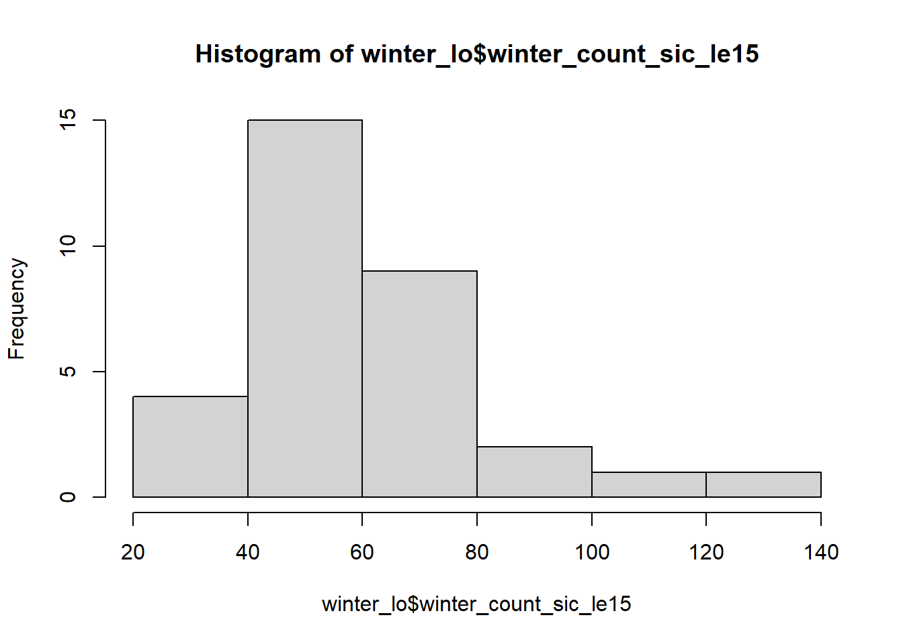
# plot winter_count_sic_le15
p.winter_lo <- ggplot(winter_lo, aes(x=year_winter, y=winter_count_sic_le15))+
geom_line()
p.winter_lo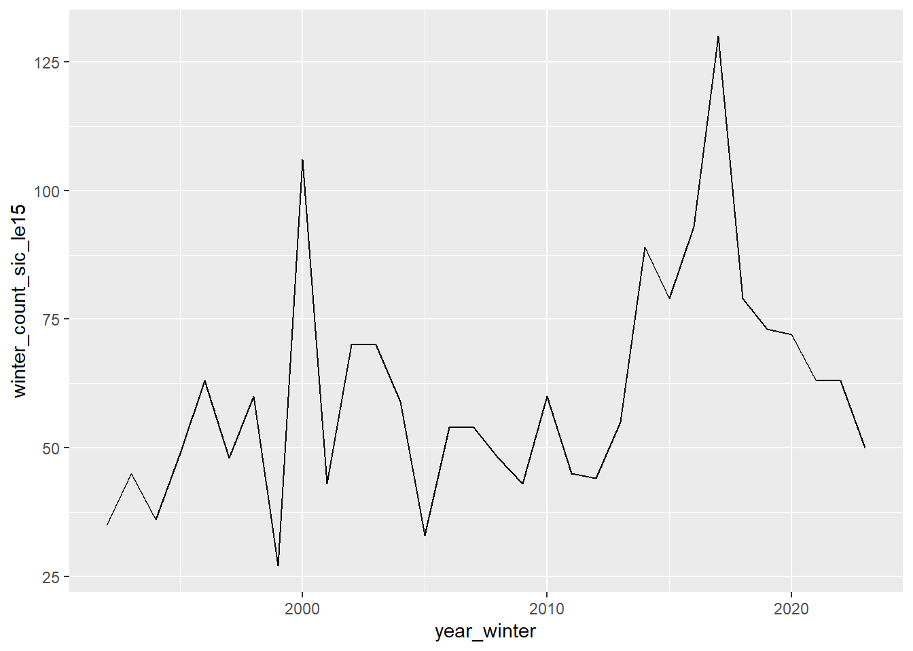
# 10. Count low sic days for SPRING: spring_lo ####
# count total SPRING days with < 15% ice cover for each year_winter
spring_lo <- aggregate(spring_sic_core$lo_ice~spring_sic_core$year_winter, FUN = sum)
colnames(spring_lo) <- c("year_winter", "spring_count_sic_le15")
hist(spring_lo$spring_count_sic_le15)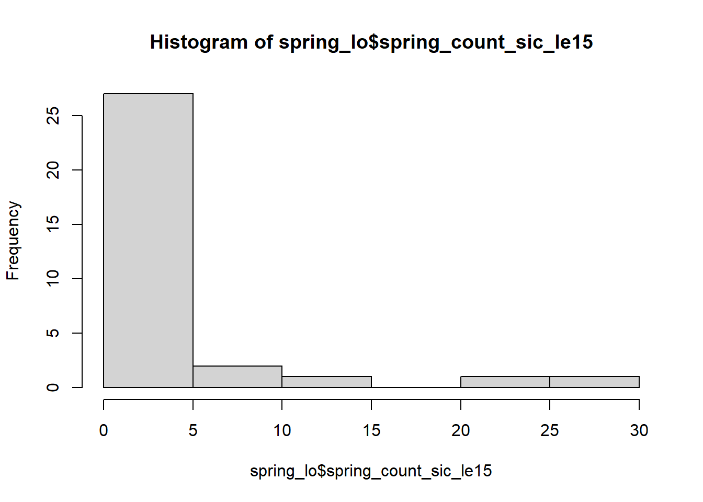
summary(spring_lo) year_winter spring_count_sic_le15
Min. :1992 Min. : 0.000
1st Qu.:2000 1st Qu.: 0.000
Median :2008 Median : 0.000
Mean :2008 Mean : 3.594
3rd Qu.:2015 3rd Qu.: 4.000
Max. :2023 Max. :30.000 # plot spring_count_sic_le15
p.spring_lo <- ggplot(spring_lo, aes(x=year_winter, y=spring_count_sic_le15))+
geom_line()
p.spring_lo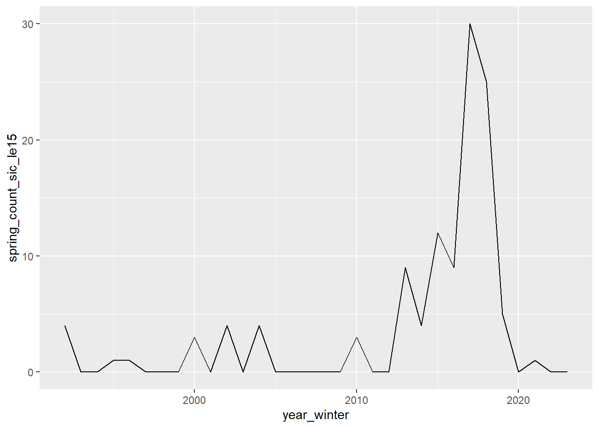
Ice Severity Index
Flint et al. (2016) further refined how the influence of high winter ice cover was quantified by creating an ice severity index. This index takes into account continuous periods of ice cover >= 95% in the core area, including periods with breaks of <95% ice that are only 1 day. As a result, the ice severity index takes higher values for longer periods of continuous high ice cover than shorter periods or separate 1-day periods.
The index first determines the length of each multi-day run of days with high ice cover (again, high ice cover is when the minimum value among the 4-pixels that overlap the core area). Each multi-day run is, in turn, multiplied by its natural log, transforming the linear increase in run length to a log curve, with a steep increase that eventually flattens-out and asymptotes at higher run length values.
To illustrate this at extreme values of runs of high ice days, take, for example, a winter that has a total of 80 days with >= 95% cover in the core area, but those high ice days occur as 2-day runs, for a total of 40 2-day runs, it would have an ice severity index of 55.45. If another winter with 80 days of high ice over occurred as 2 periods each with 40 days of high ice, it would have an ice severity index of 295.
The code here calculates severe ice index using the run length extent (rle) function in base R to calculate run lengths and connect runs separated by only 1 day.
# 11. Calc heavy sic index (Flint et a. 2016, Christie et al. 2018) for WINTER+SPRING: ws_index ####
# heavy sic index: runs of days >= 95% sic, including runs separated by only 1 day of <= 95% sic
# apply sic index calcs by year:
year <- seq(1992,2023,1) # create data frame with sequence of years to feed into the function, "year" here is winter year (year in Nov)
year.file <- data.frame(year) # convert to data frame
# function to calculate high ice index for each year of data
# NB CHANGE function to include input data set as variable so the function is repeated for each season
heavy.ice <- function(YR){
# subset year during which to summarize heavy ice
year.one <- subset(daily_min_sic_core, year_winter == YR)
#print(YR)
subice <- year.one$sic_min4 # minimum sic value across the 4 pixels for each day
#table(ice$month) # ice data are from Nov, Dec, Jan, Feb, Mar, and Apr
# indicator for days >= 95% sic
hiIce <- ifelse(subice >= 95,1,0)
# rle (run length encoding) function to summarize runs in ice indicator variable
temp.data <- rle(hiIce) # NB rle function output is 2 lists: "values" with value (in this case, 1 or 0) in the run, and "length" with length of the run
# convert zeros in run values with a 1 on each side of them to 1 to include one-day breaks in the run, as per Flint et al. 2016
temp.data$values[temp.data$values == 0 & temp.data$lengths == 1] <- 1 # if a run of zeros has a length of 1, change it from zero to 1
# convert this modified run length data set back to a data set of runs, but with single zeros within runs of 1 converted to 1's
y <- inverse.rle(temp.data)
# re-apply rle function to summarize new runs that were modified to include breaks of 1 zero
final.runs <- rle(y)
high.ice <- data.frame(unclass(final.runs)) # convert rle output to data frame with 2 columns (values, lengths)
high.ice <- subset(high.ice, values == 1) # select only runs of 1's (remove runs of 0, where 0 = days < 95% ice cover)
high.ice <- subset(high.ice, lengths > 1) # select runs of 1's longer than 1 day
sub.I <- high.ice$lengths*log(high.ice$lengths) # calculate subcomponent of the ice index, where I = sum(D*ln(D)), where D = run of 1's as defined in Flint et al. 2016
I <- sum(sub.I) # sum the subcomponents of I to get I for the year
#print(I)
}
# call function for each year with lapply
ws.out.ice <- lapply(year.file$year,heavy.ice)
# unlist
ws_index <- unlist(ws.out.ice)
# bind with year
ws_index <- cbind(year.file, ws_index)
# plot ws_index
ggplot(ws_index, aes(year, ws_index))+
geom_line()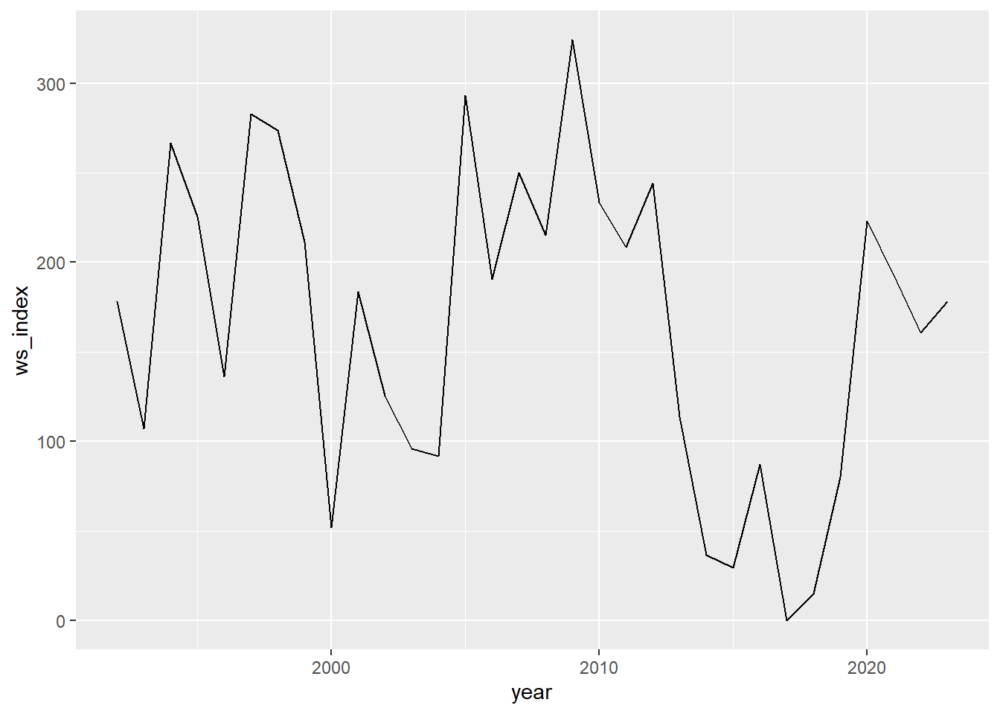
# 12. Calc heavy sic index for WINTER: winter_index ####
# function to calcuate high ice index for each year of data
heavy.ice <- function(YR){
# subset year during which to summarize heavy ice
year.one <- subset(winter_sic_core, year_winter==YR)
#print(YR)
subice <- year.one$sic_min4 # sensor data on ice concentration
#table(ice$month) #ice data are from Nov, Dec, Jan, Feb, Mar
# indicator for days >= 95%
hiIce <- ifelse(subice >= 95,1,0)
# rle function to summarize runs in ice indicator variable
temp.data <- rle(hiIce) # NB rle function output is 2 lists: "values" with value (in this case, 1 or 0) in the run, and "length" with length of the run
# convert zeros with a 1 on each side to 1 to include one-day breaks in the run, as per Flint et al. 2016
temp.data$values[temp.data$values==0 & temp.data$lengths==1] <- 1
# convert this modified run length data set back to a data set of runs, but with single zeros within runs of 1 converted to 1's
y <- inverse.rle(temp.data)
# re-apply rle function to summarize new runs that were modified to include breaks of 1 zero
final.runs <- rle(y)
high.ice <- data.frame(unclass(final.runs)) # convert rle output to dataframe with 2 columns (values, lengths)
high.ice <- subset(high.ice, values==1) # select only runs of 1's (remove runs of 0, where 0=days < 95% ice cover)
high.ice <- subset(high.ice, lengths > 1) # select runs of 1's longer than 1 day
sub.I <- high.ice$lengths*log(high.ice$lengths) # calculate subcomponent of the ice index, where I=sum(D*ln(D)), where D=run of 1's as defined in Flint et al. 2016
I <- sum(sub.I) # sum the subcomponents of I to get I for the year
#print(I)
}
# call function for each year with lapply
winter.out.ice <- lapply(year.file$year,heavy.ice)
# unlist
winter_index <- unlist(winter.out.ice)
# bind with year
winter_index <- cbind(year.file, winter_index)
# plot winter_index
ggplot(winter_index, aes(year, winter_index))+
geom_line()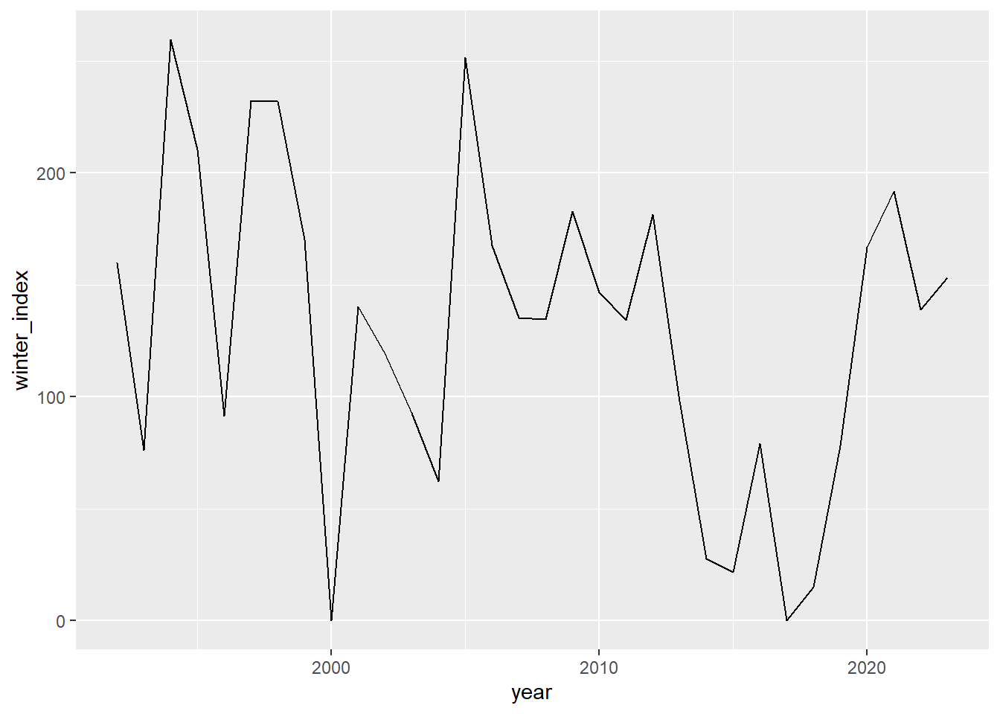
# 13. Calc heavy sic index for spring: spring_index #####
heavy.ice <- function(YR){
# subset year during which to summarize heavy ice
year.one <- subset(spring_sic_core, year_winter==YR)
#print(YR)
subice <- year.one$sic_min4 # sensor data on ice concentration
#table(ice$month) #ice data are from Apr
# indicator for days >= 95%
hiIce <- ifelse(subice >= 95,1,0)
# rle function to summarize runs in ice indicator variable
temp.data<-rle(hiIce) # NB rle function output is 2 lists: "values" with value (in this case, 1 or 0) in the run, and "length" with length of the run
# convert zeros with a 1 on each side to 1 to include one-day breaks in the run, as per Flint et al. 2016
temp.data$values[temp.data$values==0 & temp.data$lengths==1] <- 1
# convert this modified run length data set back to a data set of runs, but with single zeros within runs of 1 converted to 1's
y <- inverse.rle(temp.data)
# re-apply rle function to summarize new runs that were modified to include breaks of 1 zero
final.runs <- rle(y)
high.ice <- data.frame(unclass(final.runs)) # convert rle output to data frame with 2 columns (values, lengths)
high.ice <- subset(high.ice, values==1) # select only runs of 1's (remove runs of 0, where 0=days < 95% ice cover)
high.ice <- subset(high.ice, lengths > 1) # select runs of 1's longer than 1 day
sub.I <- high.ice$lengths*log(high.ice$lengths) # calculate subcomponent of the ice index, where I=sum(D*ln(D)), where D=run of 1's as defined in Flint et al. 2016
I <- sum(sub.I) # sum the subcomponents of I to get I for the year
#print(I)
}
# call function for each year with lapply
spring.out.ice <- lapply(year.file$year,heavy.ice)
# unlist
spring_index <- unlist(spring.out.ice)
# bind with year
spring_index <- cbind(year.file, spring_index)
# plot spring_index
ggplot(spring_index, aes(year, spring_index))+
geom_line()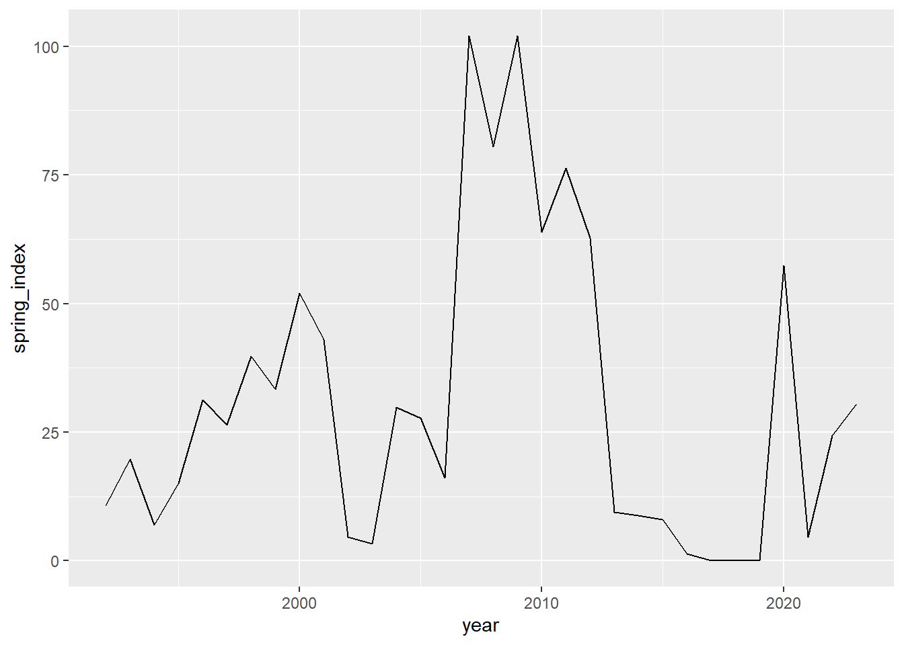
The sea ice summary variables are then compiled and saved as file: sea_ice_vars_1992-[most recent year].csv.
The sea variables in that file include: -year_winter: year index by the start of winter, Nov. For example, year_winter 2025 = 01 Nov 2025 to 30 Apr 2026 -ws_count_sic_ge95: count of days with >=95% cover in the ice area 01 Nov to 30 Apr -winter_count_sic_ge95: count of days with >=95% cover in the ice area 01 Nov to 31 March -spring_count_sic_ge95: count of days with >=95% cover in the ice area 01-30 April -ws_count_sic_le15: count of days with < 15% cover in the ice area 01 Nov to 30 Apr -winter_count_sic_le15: count of days with < 15% cover in the ice area 01 Nov to 31 March -spring_count_sic_le15: count of days with < 15% cover in the ice area 01 Nov to 01-30 April -ws_index: ice severity index (Flint et al. 2016) in the ice area 01 Nov to 30 Apr -winter_index: ice severity index (Flint et al. 2016) in the ice area 01 Nov to 31 March -spring_index: ice severity index (Flint et al. 2016) in the ice area 01-30 April
Data summarized in this file correspond to the time-series of mark-resight data from Spectacled Eiders at Kigigak Island: 1992-2025.
# 14. Compile variables into data frame and save ####
sea_ice_vars_1992_2025<-cbind(ws_hi,
winter_hi[2],
spring_hi[2],
ws_lo[2],
winter_lo[2],
spring_lo[2],
ws_index[2],
winter_index[2],
spring_index[2])
# 15. Save compiled sic variables as csv ####
write.csv(sea_ice_vars_1992_2025, "output/sic_beringSea_4pixels/sea_ice_vars_1995_2025.csv", row.names = FALSE)
sessionInfo()R version 4.5.3 (2026-03-11 ucrt)
Platform: x86_64-w64-mingw32/x64
Running under: Windows 11 x64 (build 26100)
Matrix products: default
LAPACK version 3.12.1
locale:
[1] LC_COLLATE=English_United States.utf8
[2] LC_CTYPE=English_United States.utf8
[3] LC_MONETARY=English_United States.utf8
[4] LC_NUMERIC=C
[5] LC_TIME=English_United States.utf8
time zone: America/Anchorage
tzcode source: internal
attached base packages:
[1] stats graphics grDevices utils datasets methods base
other attached packages:
[1] imager_1.0.8 magrittr_2.0.4 ggplot2_4.0.2 workflowr_1.7.2
loaded via a namespace (and not attached):
[1] sass_0.4.10 generics_0.1.4 tiff_0.1-12 jpeg_0.1-11
[5] stringi_1.8.7 digest_0.6.39 evaluate_1.0.5 grid_4.5.3
[9] RColorBrewer_1.1-3 fastmap_1.2.0 rprojroot_2.1.1 jsonlite_2.0.0
[13] processx_3.8.6 whisker_0.4.1 ps_1.9.1 promises_1.5.0
[17] httr_1.4.8 purrr_1.2.1 scales_1.4.0 textshaping_1.0.5
[21] jquerylib_0.1.4 cli_3.6.5 rlang_1.1.7 withr_3.0.2
[25] cachem_1.1.0 yaml_2.3.12 otel_0.2.0 tools_4.5.3
[29] dplyr_1.2.0 httpuv_1.6.17 bmp_0.3.1 vctrs_0.7.2
[33] R6_2.6.1 png_0.1-9 lifecycle_1.0.5 git2r_0.36.2
[37] stringr_1.6.0 fs_2.0.1 ragg_1.5.2 pkgconfig_2.0.3
[41] callr_3.7.6 pillar_1.11.1 bslib_0.10.0 later_1.4.8
[45] gtable_0.3.6 glue_1.8.0 Rcpp_1.1.1 systemfonts_1.3.2
[49] xfun_0.57 tibble_3.3.1 tidyselect_1.2.1 rstudioapi_0.18.0
[53] knitr_1.51 readbitmap_0.1.5 farver_2.1.2 htmltools_0.5.9
[57] igraph_2.2.2 labeling_0.4.3 rmarkdown_2.31 compiler_4.5.3
[61] getPass_0.2-4 S7_0.2.1